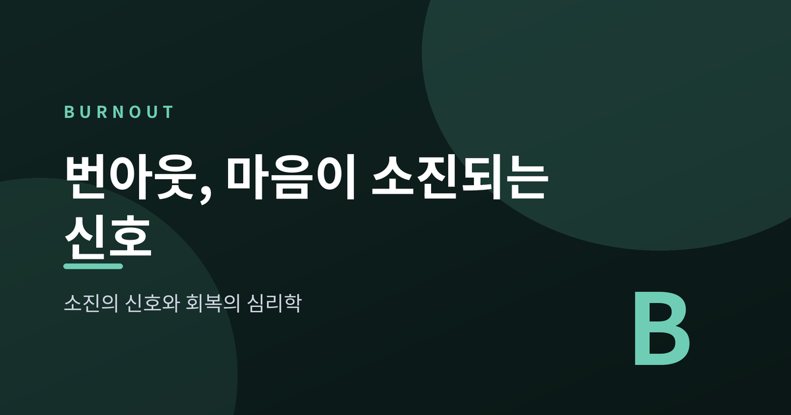
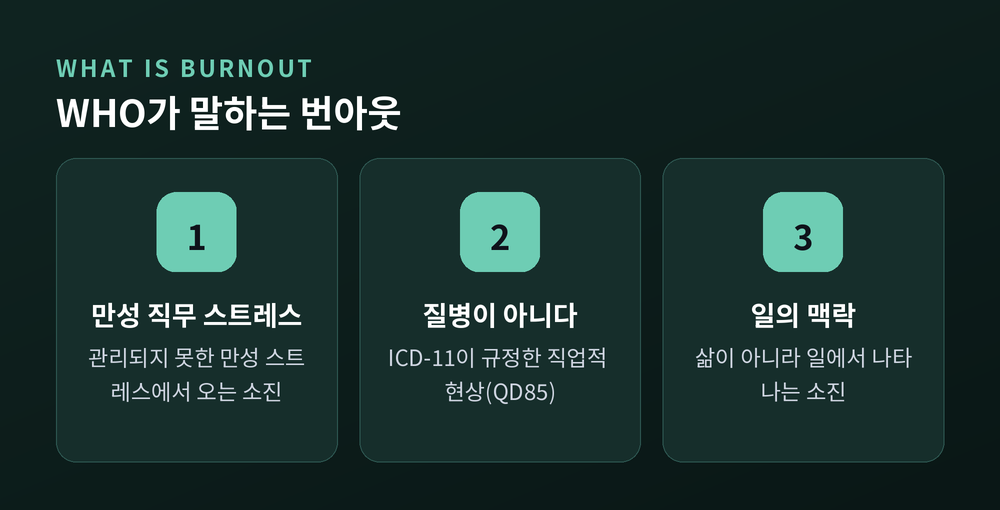
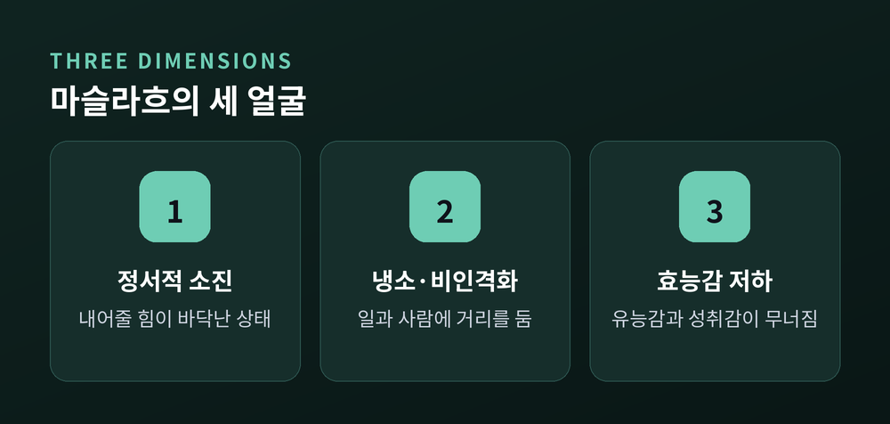
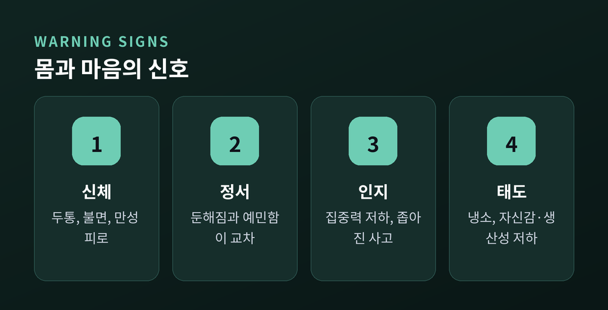
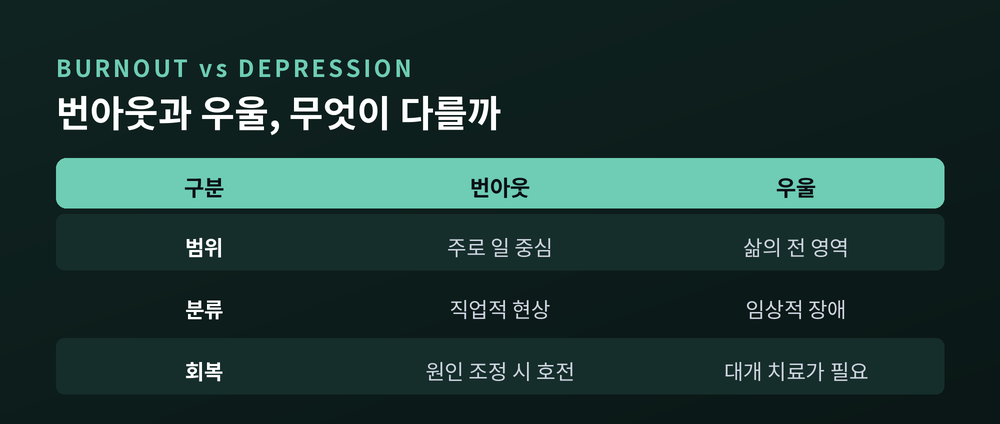
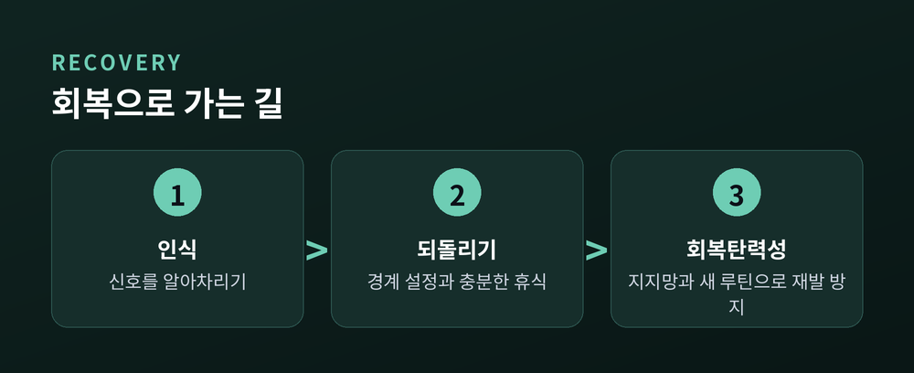

3줄 요약
· 번아웃은 성공적으로 관리되지 못한 만성 직무 스트레스에서 오는 소진 현상으로, WHO는 이를 질병이 아닌 '직업적 현상'으로 분류합니다.
· 정서적 소진, 냉소, 효능감 저하라는 세 얼굴로 서서히 찾아오며, 몸과 마음은 그 전에 여러 신호를 보냅니다.
· 경계 설정, 사회적 지지, 인지행동적 접근, 충분한 휴식과 직무 재설계로 회복할 수 있고, 오래 지속되면 전문가의 도움을 받는 것이 안전합니다.
열심히 달려온 어느 날, 아무것도 하고 싶지 않은 순간이 찾아올 때가 있습니다. 이번 글에서는 그 소진의 정체인 '번아웃'을 심리학의 언어로 차분히 정리해 보려 합니다. 무엇이 우리를 태워버리는지, 몸과 마음은 어떤 신호를 보내는지, 그리고 어떻게 다시 회복하는지를 함께 살펴보겠습니다.

번아웃(Burn-out)은 성공적으로 관리되지 못한 만성적 직장 스트레스에서 비롯되는 증후군입니다. 세계보건기구(WHO)는 2019년 국제질병분류 11차 개정판(ICD-11)에 번아웃을 코드 QD85로 포함했습니다.
여기서 오해하기 쉬운 지점이 하나 있습니다. 번아웃은 '질병'이 아닙니다. WHO는 이를 건강 상태에 영향을 주는 요인을 다루는 장에 넣어, 병이 아니라 '직업적 현상'으로 규정했습니다. 즉 우리 삶의 다른 영역이 아니라, 일이라는 맥락에서 나타나는 소진을 가리킵니다.
이 개념을 처음 세상에 꺼낸 사람은 1970년대의 심리학자 허버트 프로이덴버거입니다. 그는 번아웃을 과도한 업무와 스트레스로 에너지와 열정, 동기가 모두 고갈된 상태라고 설명했습니다. 불꽃이 다 타버린 자리를 떠올리면 이해가 쉽습니다.
번아웃 연구의 개척자인 사회심리학자 크리스티나 마슬라흐는 이 현상을 세 가지 차원으로 나누어 설명합니다. 이 셋을 알면 자신의 상태를 훨씬 또렷하게 들여다볼 수 있습니다.
첫째는 정서적 소진입니다. 정서적 자원이 바닥나, 더 이상 자신을 내어줄 힘이 남지 않은 상태입니다. 번아웃의 가장 중심에 있는 차원입니다.
둘째는 냉소, 곧 비인격화입니다. 일이나 사람을 향해 부정적이고 거리를 두는 태도가 나타납니다. 예전엔 애정을 갖던 일에 마음이 식고, "그게 다 무슨 소용인가" 하는 생각이 스며듭니다.
셋째는 효능감의 저하입니다. 자신의 유능함과 성취에 대한 감각이 무너지는 것입니다. 같은 일을 해도 예전만큼 해내지 못한다고 느끼며 자신감이 줄어듭니다.
흥미로운 점은, 많은 사람이 한두 차원에서만 높은 점수를 보인다는 사실입니다. 세 얼굴이 모두 짙게 나타나는 진짜 번아웃은 생각보다 흔치 않습니다.

번아웃을 개인의 의지 부족으로 보는 시선이 있습니다. 그러나 심리학은 이를 '개인과 일 환경 사이의 불균형'에서 찾습니다.
대표적인 설명이 직무 요구-자원 모델(JD-R)입니다. 이 모델은 우리에게 주어지는 '요구'와 그에 맞설 '자원' 사이의 균형에 주목합니다. 과도한 업무량, 시간 압박, 정서적 부담 같은 요구는 계속 커지는데, 자율성이나 동료·상사의 지지, 성과에 대한 피드백 같은 자원이 받쳐주지 못할 때 에너지가 고갈됩니다. 요구는 높고 자원은 부족한 상태가 오래 이어지면, 짧은 긴장이 결국 지속적인 번아웃으로 굳어집니다.
마슬라흐와 라이터는 여기에 더해 '직장생활 6영역'을 제시했습니다. 업무량, 통제감, 보상, 공동체, 공정성, 가치가 그것입니다. 이 여섯 곳에서 나와 일 사이에 어긋남이 클수록 소진의 위험도 커집니다. 노력에 비해 보상이 없다고 느낄 때, 내 손에 아무 통제권이 없다고 느낄 때, 조직의 가치와 내 신념이 충돌할 때, 마음은 조금씩 지쳐갑니다.
결국 번아웃은 게으름의 문제가 아니라, 오래 감당해 온 사람에게 찾아오는 부하의 결과인 셈입니다.
번아웃은 어느 날 갑자기 닥치지 않습니다. 그 전에 몸과 마음은 여러 신호를 보냅니다. 이 신호를 일찍 알아차리는 것이 회복의 출발점입니다.
신체 신호로는 두통과 불면, 좀처럼 풀리지 않는 만성 피로가 나타납니다. 자고 일어나도 개운하지 않고, 몸이 무겁게 가라앉습니다.
정서 신호는 두 방향으로 옵니다. 한쪽에서는 감정이 둔해져 무엇을 느끼기도, 표현하기도 어려워집니다. 다른 한쪽에서는 사소한 일에도 예민해지고 짜증과 무기력이 번갈아 찾아옵니다.
인지 신호로는 집중력이 눈에 띄게 떨어지고, 평소 쉽게 하던 일도 버겁게 느껴집니다. 생각이 좁아지고 판단이 흐려지기도 합니다.
태도의 변화도 뚜렷합니다. 일에 대한 냉소, 자신감 저하, 생산성 감소가 겹쳐 나타납니다.
프로이덴버거와 노스는 번아웃이 초기의 지나친 열정에서 시작해 서서히 악화된다고 보았습니다. 자신을 증명하려는 과한 야망, 잘 먹고 자는 기본을 소홀히 하는 단계, 문제를 남 탓으로 돌리는 부정을 거쳐 점점 공허로 나아갑니다. 그래서 초기 신호를 놓치지 않는 것이 무엇보다 중요합니다.

번아웃과 우울은 증상이 겹쳐 헷갈리기 쉽습니다. 그러나 둘은 같은 것이 아닙니다.
가장 큰 차이는 '범위'입니다. 번아웃은 상황에 매여 있어 주로 일을 중심으로 증상이 몰립니다. 반면 우울은 상황과 무관하게 삶의 전 영역으로 번집니다.
회복의 방식도 다릅니다. 번아웃은 스트레스의 원인인 직무를 조정하거나 거리를 두면 시간이 지나며 나아질 수 있습니다. 그러나 임상적 우울증은 유발 요인을 없애도 그것만으로는 회복되기 어렵고, 대개 전문적인 치료가 필요합니다.
연구에 따르면 번아웃을 겪는 사람은 우울 증상을 경험하기 쉽고, 번아웃은 우울의 위험 요인이 될 수 있습니다. 둘은 서로 맞닿아 있지만, 분명히 다른 상태입니다.

그래서 이렇게 구분해 보시길 권합니다. 소진의 감각이 일 밖의 전 영역으로 퍼지고, 흥미 상실과 무가치감, 수면·식욕의 변화가 오래 이어진다면, 단순한 번아웃을 넘어선 상태일 수 있습니다. 이때는 혼자 판단하기보다 전문가의 평가를 받아보는 편이 안전합니다.
다행히 번아웃은 회복할 수 있습니다. 핵심은 인식하고, 되돌리고, 다시 지치지 않을 힘을 기르는 것입니다.
첫째, 경계를 세웁니다. 역할 전체를 하루아침에 바꿀 필요는 없습니다. 아침에 이메일을 열기 전 한 시간을 나만의 집중 시간으로 지키거나, 굳이 필요 없는 회의 하나를 거절하는 작은 시도부터 시작합니다. 저녁 어느 시각 이후로는 일에서 완전히 벗어나는 선을 그어두는 것도 좋습니다.
둘째, 사람과 다시 연결됩니다. 만성 스트레스는 우리의 지지망을 조용히 갉아먹습니다. 신뢰하는 사람과 이어져 있다고 느낄수록 회복은 빨라집니다. 강한 사회적 지지를 받는 사람은 같은 스트레스에서도 덜 소진된다는 연구가 있습니다.
셋째, 생각의 습관을 살핍니다. 인지행동적 접근은 번아웃에 잘 연구된 방법입니다. "내가 다 감당해야 한다"는 왜곡된 믿음을 알아차리고, 조금 더 현실적인 생각으로 바꾸어 갑니다. 완벽주의를 내려놓는 연습이 여기에 닿아 있습니다.
넷째, 잘 쉬고 잘 잡니다. 쉼의 '질'을 높이는 것이 중요합니다. 화면에서 눈을 떼고, 산책이나 명상처럼 몸을 회복시키는 활동을 곁에 둡니다. 규칙적인 수면과 카페인 줄이기 같은 수면 위생도 큰 힘이 됩니다.
다섯째, 일 자체를 다시 설계합니다. 개인의 노력만으로는 한계가 있습니다. 업무량을 조정하고, 자율성을 넓히고, 앞서 말한 여섯 영역의 어긋남을 줄이는 방향으로 일을 다듬어 갑니다. 가능하다면 조직과 함께 풀어야 할 문제입니다.

정리하면 이렇습니다. 번아웃은 나약함의 증거가 아니라, 오래 애써온 사람에게 찾아오는 몸과 마음의 정직한 신호입니다.
그 신호를 부끄러워하지 않고 들여다보는 것이 회복의 시작입니다. 잠시 멈추어도 괜찮습니다. 멈춤은 포기가 아니라, 다시 걷기 위한 준비이기 때문입니다.
다만 위의 방법을 시도해도 소진과 무기력이 오래 가시지 않거나 일상과 수면, 관계에 지장이 이어진다면, 혼자 버티지 마시길 권합니다. 정신건강의학과나 심리상담센터, 공신력 있는 상담 기관의 도움을 받는 것은 약함이 아니라 자신을 돌보는 가장 현명한 선택입니다. 당신의 마음은 그렇게 돌볼 만한 가치가 충분합니다.
"멈춤은 포기가 아니라, 다시 걷기 위한 준비입니다."